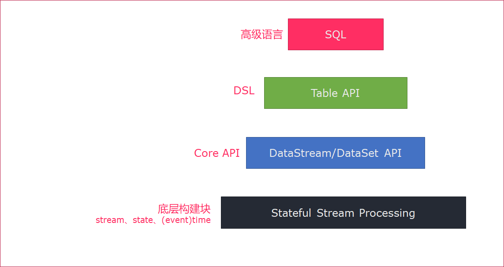

Flink高级
学习目标
Flink的状态管理
- keyed state
- operator state
Flink的CheckPoint
- checkpoint的持久化方案
- checkpoint持久化开发
Flink SQL & Table API
- DataSet/DataStream转Table
- Table转DataSet/DataStream
- SQL操作数据
- TableAPI操作数据
1. Flink的状态管理
1.1. 什么是有状态的计算
官网对Flink的解释：Stateful Computations over Data Streams，这是说Flink是一个有xA的数据流计算框架。
那什么是有状态的计算？
计算任务的结果不仅仅依赖于输入，还依赖于它的当前状态，其实大多数的计算都是有状态的计算。
比如wordcount,计算单词的count,这是一个很常见的业务场景。count做为输出，在计算的过程中要不断的把输入累加到count上去，那么count就是一个state。
传统的流计算系统缺少对于程序状态的有效支持
- 状态数据的存储和访问；
- 状态数据的备份和恢复；
- 状态数据的划分和动态扩容。
在传统的批处理中，数据是划分为块分片去完成的，然后每一个Task去处理一个分片。当分片执行完成后，把输出聚合起来就是最终的结果。在这个过程当中，对于state的需求还是比较小的。
对于流计算而言，对State有非常高的要求，因为在流系统中输入是一个无限制的流，会运行很长一段时间，甚至运行几天或者几个月都不会停机。在这个过程当中，就需要将状态数据很好的管理起来。很不幸的是，在传统的流计算系统中，对状态管理支持并不是很完善。比如storm,没有任何程序状态的支持，一种可选的方案是storm+hbase这样的方式去实现，把这状态数据存放在Hbase中，计算的时候再次从Hbase读取状态数据，做更新在写入进去。这样就会有如下几个问题
流计算系统的任务和Hbase的数据存储有可能不在同一台机器上，导致性能会很差。这样经常会做远端的访问，走网络和存储；
备份和恢复是比较困难，因为Hbase是没有回滚的，要做到Exactly once 很困难。在分布式环境下，如果程序出现故障，只能重启Storm，那么Hbase的数据也就无法回滚到之前的状态。 比如广告计费的这种场景，Storm+Hbase是是行不通的，出现的问题是钱可能就会多算，解决以上的办法是Storm+mysql，通过mysql的回滚解决一致性的问题。但是架构会变得非常复杂。性能也会很差，要commit确保数据的一致性。
对于storm而言状态数据的划分和动态扩容也是非常难做。 一个很严重的问题是所有用户都会在strom上重复的做这些工作，比如搜索，广告都要在做一遍，由此限制了部门的业务发展。
Flink丰富的状态访问和高效的容错机制
我们前面写的WordCount的例子，没有包含状态管理。如果一个Task在处理过程中挂掉了，那么它在内存中的状态都会丢失，所有的数据都需要重新计算。 从容错和消息处理的语义上(at least once, exactly once)，Flink引入了State和Checkpoint
首先区分一下两个概念:
State:
一般指一个具体的Task/Operator的状态，
State数据默认保存在Java的堆内存中
Checkpoint:
表示了一个Flink Job在一个特定时刻的一份全局状态快照，即包含了所有Task/Operator的状态
可以理解为Checkpoint是把State数据定时持久化存储了，
State可以被记录，在失败的情况下数据还可以恢复
Flink中有两种基本类型的State
- Keyed State
- Operator State
可以以两种形式存在：原始状态和托管状态
托管状态是由Flink框架管理的状态，如ValueState, ListState, MapState等。
而原始状态，由用户自行管理状态具体的数据结构，框架在做checkpoint的时候，使用byte[]来读写状态内容，对其内部数据结构一无所知。
通常在DataStream上的状态推荐使用托管的状态，当实现一个用户自定义的operator时，会使用到原始状态。
1.2. Keyed State
顾名思义，就是基于KeyedStream上的状态。这个状态是跟特定的key绑定的，对KeyedStream流上的每一个key，都对应一个state。
stream.keyBy(…)
保存state的数据结构
ValueState<T>:即类型为T的单值状态。这个状态与对应的key绑定，是最简单的状态了。它可以通过update方法更新状态值，通过value()方法获取状态值
ListState
ReducingState
MapState
需要注意的是，以上所述的State对象，仅仅用于与状态进行交互（更新、删除、清空等），而真正的状态值，有可能是存在内存、磁盘、或者其他分布式存储系统中。相当于我们只是持有了这个状态的句柄
官网示例代码
import org.apache.flink.api.common.functions.RichFlatMapFunction
import org.apache.flink.api.common.state.{ValueState, ValueStateDescriptor}
import org.apache.flink.configuration.Configuration
import org.apache.flink.streaming.api.scala.StreamExecutionEnvironment
import org.apache.flink.api.scala._
import org.apache.flink.util.Collector
class CountWindowAverage extends RichFlatMapFunction[(Long, Long), (Long, Long)] {
private var sum: ValueState[(Long, Long)] = _
override def flatMap(input: (Long, Long), out: Collector[(Long, Long)]): Unit = {
// access the state value
val tmpCurrentSum = sum.value
// If it hasn't been used before, it will be null
val currentSum = if (tmpCurrentSum != null) {
tmpCurrentSum
} else {
(0L, 0L)
}
// update the count
val newSum = (currentSum._1 + 1, currentSum._2 + input._2)
// update the state
sum.update(newSum)
// if the count reaches 2, emit the average and clear the state
if (newSum._1 >= 2) {
out.collect((input._1, newSum._2 / newSum._1))
sum.clear()
}
}
override def open(parameters: Configuration): Unit = {
sum = getRuntimeContext.getState(
new ValueStateDescriptor[(Long, Long)]("average", createTypeInformation[(Long, Long)])
)
}
}
object ExampleCountWindowAverage extends App {
val env = StreamExecutionEnvironment.getExecutionEnvironment
env.fromCollection(List(
(1L, 3L),
(1L, 5L),
(1L, 7L),
(1L, 4L),
(1L, 2L)
)).keyBy(_._1)
.flatMap(new CountWindowAverage())
.print()
// the printed output will be (1,4) and (1,5)
env.execute("ExampleManagedState")
}
1.3. Operator State
与Key无关的State，与Operator绑定的state，整个operator
只对应一个state保存state的数据结构
- ListState
- ListState
举例来说，Flink中的Kafka Connector，就使用了operator state。它会在每个connector实例中，保存该实例中消费topic的所有(partition, offset)映射

官网案例
package com.itheima
import org.apache.flink.api.common.state.{ListState, ListStateDescriptor}
import org.apache.flink.api.common.typeinfo.{TypeHint, TypeInformation}
import org.apache.flink.runtime.state.{FunctionInitializationContext, FunctionSnapshotContext}
import org.apache.flink.streaming.api.checkpoint.CheckpointedFunction
import org.apache.flink.streaming.api.functions.sink.SinkFunction
import scala.collection.mutable.ListBuffer
/**
* 带缓存的Sink
*
* SinkFunction : 自定义Sink的函数
* CheckpointedFunction: 状态转换函数的核心接口
* @param threshold 阈值
*/
class BufferingSink(threshold: Int = 0)
extends SinkFunction[(String, Int)]
with CheckpointedFunction {
@transient
private var checkpointedState: ListState[(String, Int)] = _
// 缓存对象
private val bufferedElements = ListBuffer[(String, Int)]()
override def invoke(value: (String, Int)): Unit = {
// 累加数据到bufferedElements
bufferedElements += value
// 如果bufferedElements累加的大小等于阈值,那么进行sink,并清除数据
if (bufferedElements.size == threshold) {
for (element <- bufferedElements) {
// send it to the sink
}
bufferedElements.clear()
}
}
/**
* 快照State
* @param context
*/
override def snapshotState(context: FunctionSnapshotContext): Unit = {
// 清理下历史State
checkpointedState.clear()
// 遍历缓存bufferedElements中的所有数据,会添加到ListState中
for (element <- bufferedElements) {
checkpointedState.add(element)
}
}
/**
* 初始化State
* @param context
*/
override def initializeState(context: FunctionInitializationContext): Unit = {
// 创建ListStateDescriptor
val descriptor = new ListStateDescriptor[(String, Int)](
"buffered-elements",
TypeInformation.of(new TypeHint[(String, Int)]() {})
)
// 获取ListState对象
checkpointedState = context.getOperatorStateStore.getListState(descriptor)
// 如果是错误恢复状态, 获取ListState对象的值,并且累加到bufferedElements
if(context.isRestored) {
for(element <- checkpointedState.get()) {
bufferedElements += element
}
}
}
}
2. Flink的容错
2.1. Checkpoint介绍
Checkpoint是Flink容错的核心机制。它可以定期地将各个Operator处理的数据进行快照存储（Snapshot）。如果Flink程序出现宕机，可以重新从这些快照中恢复数据。
每个需要Checkpoint的应用在启动时，Flink的JobManager为其创建一个 CheckpointCoordinator(检查点协调器)，CheckpointCoordinator全权负责本应用的快照制作。

CheckpointCoordinator周期性的向该流应用的所有Source算子发送Barrier。当某个Source算子收到一个barrier时，便
暂停数据处理过程，然后将自己的当前状态制作成快照，并保存到指定的持久化存储中，最后向CheckpointCoordinator报告自己快照制作情况，同时向自身所有下游算子广播该Barrier，恢复数据处理下游算子收到Barrier之后，会暂停自己的数据处理过程，然后将自身的相关状态制作成快照，并保存到指定的持久化存储中，最后向CheckpointCoordinator报告自身快照情况，同时向自身所有下游算子广播该Barrier，恢复数据处理。
每个算子按照步骤3不断制作快照并向下游广播，直到
最后Barrier传递到Sink算子，快照制作完成。当CheckpointCoordinator收到所有算子的报告之后，认为该周期的快照制作成功; 否则，如果在规定的时间内没有收到所有算子的报告，则认为本周期快照制作失败
单流的Barrier
Flink 分布式快照的核心概念之一就是数据栅栏（barrier）。
这些 barrier 被插入到数据流中，作为数据流的一部分和数据一起向下流动。
Barrier 不会干扰正常数据，
数据流严格有序。Barrier 永远不会赶超通常的流记录，它会严格遵循顺序。- 一个 barrier 把数据流分割成两部分：一部分进入到当前快照，另一部分进入下一个快照。
- 每一个 barrier 都带有快照 ID，并且 barrier 之前的数据都进入了此快照。
- Barrier 不会干扰数据流处理，所以非常轻量。
- 多个不同快照的多个 barrier 会在流中同时出现，即多个快照可能同时创建。

并行Barrier

当Operator接收到多个输入的数据流时，需要在Snapshot Barrier中对数据流进行排列对齐：
- Operator从一个incoming Stream接收到Snapshot Barrier n，然后
暂停处理，直到其它的incoming Stream的Barrier n（否则属于2个Snapshot的记录就混在一起了）到达该Operator - 接收到Barrier n的Stream被临时搁置，来自这些Stream的记录不会被处理，而是被放在一个Buffer中。
- 一旦最后一个Stream接收到Barrier n，Operator会emit所有暂存在Buffer中的记录，然后向Checkpoint Coordinator发送Snapshot n。
- 继续处理来自多个Stream的记录
基于Stream Aligning操作能够实现Exactly Once语义，但是也会给流处理应用带来延迟，因为为了排列对齐Barrier，会暂时缓存一部分Stream的记录到Buffer中，尤其是在数据流并行度很高的场景下可能更加明显，通常以最迟对齐Barrier的一个Stream为处理Buffer中缓存记录的时刻点。在Flink中，提供了一个开关，选择是否使用Stream Aligning，如果关掉则Exactly Once会变成At least once。
2.2. Checkpoint持久化
目前，Checkpoint持久化存储可以使用如下三种:
MemoryStateBackend
FsStateBackend
RocksDBStateBackend
2.2.1. MemoryStateBackend
MemoryStateBackend 是将状态维护在 Java 堆上的一个内部状态后端。键值状态和窗口算子使用哈希表来存储数据（values）和定时器（timers）。当应用程序 checkpoint 时，此后端会在将状态发给 JobManager 之前快照下状态，JobManager 也将状态存储在 Java 堆上。默认情况下，MemoryStateBackend 配置成支持异步快照。异步快照可以避免阻塞数据流的处理，从而避免反压的发生。
使用 MemoryStateBackend 时的注意点：
- 默认情况下，每一个状态的大小限制为 5 MB。可以通过 MemoryStateBackend 的构造函数增加这个大小。
- 状态大小受到 akka 帧大小的限制，所以无论怎么调整状态大小配置，都不能大于 akka 的帧大小。
- 状态的总大小不能超过 JobManager 的内存。
何时使用 MemoryStateBackend：
- 本地开发或调试时建议使用 MemoryStateBackend，因为这种场景的状态大小的是有限的。
- MemoryStateBackend 最适合小状态的应用场景。例如
Kafka consumer，或者一次仅一记录的函数 （Map, FlatMap，或 Filter）。
2.2.2. FsStateBackend
该持久化存储主要将快照数据保存到文件系统中，目前支持的文件系统主要是 HDFS和本地文件。如果使用HDFS，则初始化FsStateBackend时，需要传入以 “hdfs://”开头的路径(即: new FsStateBackend("hdfs:///hacluster/checkpoint"))， 如果使用本地文件，则需要传入以“file://”开头的路径(即:new FsStateBackend("file:///Data"))。在分布式情况下，不推荐使用本地文件。如果某个算子在节点A上失败，在节点B上恢复，使用本地文件时，在B上无法读取节点 A上的数据，导致状态恢复失败。
FsStateBackend适用的场景：
适用于处理大状态，长窗口，或大键值状态的有状态处理任务。
非常适合用于高可用方案。
2.2.3. RocksDBStateBackend
RocksDBStateBackend 的配置也需要一个文件系统（类型，地址，路径），如下所示：
- “hdfs://namenode:9000/flink/checkpoints” 或
- “file:///flink/checkpoints”
RocksDB 是一种嵌入式的本地数据库。RocksDBStateBackend 将处理中的数据使用 RocksDB 存储在本地磁盘上。在 checkpoint 时，整个 RocksDB 数据库会被存储到配置的文件系统中，或者在超大状态作业时可以将增量的数据存储到配置的文件系统中。同时 Flink 会将极少的元数据存储在 JobManager 的内存中，或者在 Zookeeper 中（对于高可用的情况）。RocksDB 默认也是配置成异步快照的模式。
何时使用 RocksDBStateBackend：
- RocksDBStateBackend 最适合用于处理大状态，长窗口，或大键值状态的有状态处理任务。
- RocksDBStateBackend 非常适合用于高可用方案。
- RocksDBStateBackend 是目前唯一支持增量 checkpoint 的后端。增量 checkpoint 非常使用于超大状态的场景。
当使用 RocksDB 时，状态大小只受限于磁盘可用空间的大小。这也使得 RocksDBStateBackend 成为管理超大状态的最佳选择。使用 RocksDB 的权衡点在于所有的状态相关的操作都需要序列化（或反序列化）才能跨越 JNI 边界。与上面提到的堆上后端相比，这可能会影响应用程序的吞吐量。
如果用户使用自定义窗口(window)，不推荐用户使用RocksDBStateBackend。在自定义窗口中，状态以ListState的形式保存在StatBackend中，如果一个key值中有多 个value值，则RocksDB读取该种ListState非常缓慢，影响性能。用户可以根据应用的具体情况选择FsStateBackend+HDFS或RocksStateBackend+HDFS。
设置CheckPoint的代码如下:
val env = StreamExecutionEnvironment.getExecutionEnvironment
// start a checkpoint every 1000 ms
env.enableCheckpointing(1000)
// advanced options:
// 设置checkpoint的执行模式，最多执行一次或者至少执行一次
env.getCheckpointConfig.setCheckpointingMode(CheckpointingMode.EXACTLY_ONCE)
// 设置checkpoint的超时时间
env.getCheckpointConfig.setCheckpointTimeout(60000)
// 如果在制作快照过程中出现错误，是否让整体任务失败：true是 false不是
env.getCheckpointConfig.setFailOnCheckpointingErrors(false)
//设置同一时间有多少个checkpoint可以同时执行
env.getCheckpointConfig.setMaxConcurrentCheckpoints(1)
2.3. 修改State Backend
第一种：单任务调整
修改当前任务代码
env.setStateBackend(new FsStateBackend("hdfs://namenode:9000/flink/checkpoints"));
或者new MemoryStateBackend()
或者new RocksDBStateBackend(filebackend, true);需要添加第三方依赖
第二种：全局调整
修改flink-conf.yaml
state.backend: filesystem
state.checkpoints.dir: hdfs://namenode:9000/flink/checkpoints
注意：state.backend的值可以是下面几种：
jobmanager(MemoryStateBackend),
filesystem(FsStateBackend),
rocksdb(RocksDBStateBackend)
2.4. 案例
2.4.1. 需求
假定用户需要每隔1秒钟需要统计4秒中窗口中数据的量，然后对统计的结果值进行checkpoint处理。
窗口的长度: 4s
窗口的滑动时间: 1s
求数据量的总数
checkpoint的支持
2.4.2. 数据规划
使用自定义算子每秒钟产生大约10000条数据。
产生的数据为一个四元组(Long，String，String，Integer)—------(id,name,info,count)
数据经统计后，统计结果打印到终端输出
打印输出的结果为Long类型的数据
2.4.3. 开发思路
source算子每隔1秒钟发送10000条数据，并注入到Window算子中。
window算子每隔1秒钟统计一次最近4秒钟内数据数量。
每隔1秒钟将统计结果打印到终端
每隔6秒钟触发一次checkpoint，然后将checkpoint的结果保存到HDFS或本地文件中。
2.4.4. 开发步骤
开发自定义数据源
1. 自定义样例类(id: Long, name: String, info: String, count: Int)
2. 自定义数据源,继承RichSourceFunction
3. 实现run方法, 每秒钟向流中注入10000个样例类
开发自定义状态
1. 继承Serializable
2. 为总数count提供set和get方法
开发自定义Window和检查点
1. 继承WindowFunction
2. 重写apply方法,对窗口数据进行总数累加
3. 继承ListCheckpointed
4. 重写snapshotState,制作自定义快照
5. 重写restoreState,恢复自定义快照
开发主业务
流处理环境
开启checkpoint,间隔时间为6s
设置checkpoint位置
设置处理时间为事件时间
添加数据源
添加水印支持
keyby分组
设置滑动窗口,窗口时间为4s
指定自定义窗口
打印结果
执行任务
2.4.5. 代码
package com.itheima
import java.util
import java.util.concurrent.TimeUnit
import org.apache.flink.api.java.tuple.Tuple
import org.apache.flink.runtime.state.filesystem.FsStateBackend
import org.apache.flink.streaming.api.functions.AssignerWithPeriodicWatermarks
import org.apache.flink.streaming.api.{CheckpointingMode, TimeCharacteristic}
import org.apache.flink.streaming.api.functions.source.RichSourceFunction
import org.apache.flink.streaming.api.functions.source.SourceFunction.SourceContext
import org.apache.flink.streaming.api.scala.{DataStream, KeyedStream, StreamExecutionEnvironment, WindowedStream}
import org.apache.flink.streaming.api.watermark.Watermark
import org.apache.flink.streaming.api.windowing.assigners.SlidingEventTimeWindows
import org.apache.flink.streaming.api.windowing.time.Time
import org.apache.flink.api.scala._
import org.apache.flink.streaming.api.checkpoint.ListCheckpointed
import org.apache.flink.streaming.api.scala.function.WindowFunction
import org.apache.flink.streaming.api.windowing.windows.TimeWindow
import org.apache.flink.util.Collector
//样例类-->发送数据形式
case class SEvent(id: Long, name: String, info: String, count: Int)
/**
* 自定义数据源,继承RichSourceFunction
* 实现run方法和cancel方法
*/
class SEventSourceWithChk extends RichSourceFunction[SEvent] {
private var isRunning = true
// 任务取消时调用
override def cancel(): Unit = {
isRunning = false
}
// source算子的逻辑，即:每秒钟向流图中注入10000个元组
override def run(sourceContext: SourceContext[SEvent]): Unit = {
while (isRunning) {
for (i <- 0 until 10000) {
sourceContext.collect(SEvent(1, "hello-" + i, "test-info", 1))
}
TimeUnit.SECONDS.sleep(1)
}
}
}
/**
* 该段代码是流图定义代码，具体实现业务流程，另外，代码中窗口的触发时间使 用了event time。
*/
object FlinkEventTimeAPIChkMain {
def main(args: Array[String]): Unit = {
// 1. 流处理环境
val env = StreamExecutionEnvironment.getExecutionEnvironment
// 2. 开启checkpoint,间隔时间为6s
env.enableCheckpointing(6000)
// 3. 设置checkpoint位置
// env.setStateBackend(new FsStateBackend("hdfs://node01:9000/flink-checkpoint/checkpoint/"))
env.setStateBackend(new FsStateBackend("file:///E:/dev_checkpoint/"))
// 设置checkpoint模式, EXACTLY_ONCE为默认值,这句可以省略
env.getCheckpointConfig.setCheckpointingMode(CheckpointingMode.EXACTLY_ONCE)
// 4.设置处理时间为 事件时间
env.setStreamTimeCharacteristic(TimeCharacteristic.EventTime)
// 5. 添加数据源
val source: DataStream[SEvent] = env.addSource(new SEventSourceWithChk)
// 6. 添加水印支持
val watermarkDataStream: DataStream[SEvent] = source.assignTimestampsAndWatermarks(new AssignerWithPeriodicWatermarks[SEvent] {
// 设置watermark
override def getCurrentWatermark: Watermark = {
new Watermark(System.currentTimeMillis())
}
// 给每个元组打上时间戳
override def extractTimestamp(t: SEvent, l: Long): Long = {
System.currentTimeMillis()
}
})
// 7. keyby分组
val keyedStream: KeyedStream[SEvent, Tuple] = watermarkDataStream.keyBy("id")
// 8. 设置滑动窗口,窗口时间为4s
val windowedStream: WindowedStream[SEvent, Tuple, TimeWindow] = keyedStream.timeWindow(Time.seconds(4),Time.seconds(1))
// 9. 指定自定义窗口
val result: DataStream[Long] = windowedStream.apply(new WindowStatisticWithChk)
// 10. 打印结果
result.print()
// 11. 执行任务
env.execute()
}
}
/**
* 该数据在算子制作快照时用于保存到目前为止算子记录的数据条数。
* 用户自定义状态
*/
class UDFState extends Serializable {
private var count = 0L
// 设置用户自定义状态
def setState(s: Long) = count = s
// 获取用户自定状态
def getState = count
}
//
/**
* 该段代码是window算子的代码，每当触发计算时统计窗口中元组数量。
* 自定义Window,继承WindowFunction
* WindowFunction[IN, OUT, KEY, W <: Window]
* ListCheckpointed[UDFState]
*
*/
class WindowStatisticWithChk extends WindowFunction[SEvent, Long, Tuple, TimeWindow] with ListCheckpointed[UDFState] {
private var total = 0L
/**
* window算子的实现逻辑，即:统计window中元组的数量
*
* @param key keyby的类型
* @param window 窗口
* @param input 输入类型
* @param out 输出类型
*/
override def apply(key: Tuple, window: TimeWindow, input: Iterable[SEvent], out: Collector[Long]): Unit = {
var count = 0L
for (event <- input) {
count += 1L
}
total += count
out.collect(count)
}
/**
* 从自定义快照中恢复状态
*
* @param state
*/
override def restoreState(state: java.util.List[UDFState]): Unit = {
val udfState = state.get(0)
total = udfState.getState
}
/**
* 制作自定义状态快照
*
* @param checkpointId 唯一单调递增的数字
* @param timestamp master触发checkpoint的时间戳
* @return
*/
override def snapshotState(checkpointId: Long, timestamp: Long): java.util.List[UDFState] = {
val udfList: java.util.ArrayList[UDFState] = new java.util.ArrayList[UDFState]
val udfState = new UDFState
udfState.setState(total)
udfList.add(udfState)
udfList
}
}
3. Flink SQL开发
3.1. 什么是flink关系型API
当我们在使用flink做流式和批式任务计算的时候，往往会想到几个问题：
- 需要熟悉两套API : DataStream/DataSet API，API有一定难度，开发人员无法集中精力到具体业务的开发
- 需要有Java或Scala的开发经验
- flink同时支持批任务与流任务，如何做到API层的统一
flink已经拥有了强大的DataStream/DataSetAPI，满足流计算和批计算中的各种场景需求，但是关于以上几个问题，我们还需要提供一种关系型的API来实现flink API层的流与批的统一，那么这就是flink的Table API & SQL。
首先Table API& SQL 是一种关系型API，用户可以像操作MySQL数据库表一样的操作数据，而不需要写Java代码完成flink function，更不需要手工的优化Java代码调优。另外，SQL作为一个非程序员可操作的语言，学习成本很低，如果一个系统提供SQL支持，将很容易被用户接受。
总结来说，关系型API的好处：
关系型API是声明式的
查询能够被有效的优化
查询可以高效的执行
“Everybody” knows SQL
Table API& SQL 是流处理和批处理统一的API层，如下图。
- flink在runtime层是统一的，因为flink将批任务看做流的一种特例来执行
- 在API层，flink为批和流提供了两套API（DataSet和DataStream）
- Table API & SQL就统一了flink的API层，批数据上的查询会随着输入数据的结束而结束并生成DataSet，流数据的查询会一直运行并生成结果流。
- Table API & SQL做到了批与流上的查询具有同样的语法语义，因此不用改代码就能同时在批和流上执行。

Table API的特点 Table API和SQL都是Apache Flink中高等级的分析API，SQL所具备的特点Table API也都具有，如下：
声明式 - 用户只关心做什么，不用关心怎么做；
高性能 - 支持查询优化，可以获取最好的执行性能；
流批统一 - 相同的统计逻辑，既可以流模式运行，也可以批模式运行；
标准稳定 - 语义遵循SQL标准，语法语义明确，不易变动。
当然除了SQL的特性，因为Table API是在Flink中专门设计的，所以Table API还具有自身的特点：
- 表达方式的扩展性 - 在Flink中可以为Table API开发很多便捷性功能，如：Row.flatten(), map/flatMap 等
- 功能的扩展性 - 在Flink中可以为Table API扩展更多的功能，如：Iteration，flatAggregate 等新功能
- 编译检查 - Table API支持java和scala语言开发，支持IDE中进行编译检查。
Table API和SQL捆绑在flink-table Maven工件中。必须将以下依赖项添加到你的项目才能使用Table API和SQL：
<dependency>
<groupId>org.apache.flink</groupId>
<artifactId>flink-table_2.11</artifactId>
<version>1.6.1</version>
</dependency>
另外，你需要为Flink的Scala批处理或流式API添加依赖项。对于批量查询，您需要添加：
<dependency>
<groupId>org.apache.flink</groupId>
<artifactId>flink-scala_2.11</artifactId>
<version>1.6.1</version>
</dependency>
3.2. Table API和SQL程序的结构
Table API一般与DataSet或者DataStream紧密关联，可以通过一个DataSet或DataStream创建出一个Table，再用类似于filter, join, 或者 select关系型转化操作来转化为一个新的Table对象。最后将一个Table对象转回一个DataSet或DataStream。从内部实现上来说，所有应用于Table的转化操作都变成一棵逻辑表操作树，在Table对象被转化回DataSet或者DataStream之后，转化器会将逻辑表操作树转化为对等的DataSet或者DataStream操作符。
Flink的批处理和流处理的Table API和SQL程序遵循相同的模式；所以我们只需要使用一种来演示即可要想执行flink的SQL语句，首先需要获取SQL的执行环境：两种方式（batch和streaming）：
批处理:
val bEnv = ExecutionEnvironment.getExecutionEnvironment
// create a TableEnvironment for batch queries
val bTableEnv = TableEnvironment.getTableEnvironment(bEnv)
流处理:
val sEnv = StreamExecutionEnvironment.getExecutionEnvironment
// create a TableEnvironment for streaming queries
val sTableEnv = TableEnvironment.getTableEnvironment(sEnv)
通过getTableEnvironment可以获取TableEnviromment；这个TableEnviromment是Table API和SQL集成的核心概念。它负责：
在内部目录中注册一个表
注册外部目录
执行SQL查询
注册用户定义的（标量，表格或聚合）函数
转换DataStream或DataSet成Table
持有一个ExecutionEnvironment或一个参考StreamExecutionEnvironment
3.3. 在内部目录中注册一个表
TableEnvironment维护一个按名称注册的表的目录。有两种类型的表格，输入表格和输出表格。输入表可以在Table API和SQL查询中引用并提供输入数据。输出表可用于将表API或SQL查询的结果发送到外部系统输入表可以从各种来源注册：
现有Table对象，通常是表API或SQL查询的结果。
TableSource，它访问外部数据，例如文件，数据库或消息传递系统。
DataStream或DataSet来自DataStream或DataSet程序。
输出表可以使用注册TableSink。
3.3.1. 注册一个表
// get a TableEnvironment
val tableEnv = TableEnvironment.getTableEnvironment(env)
// register the Table projTable as table "projectedX"
tableEnv.registerTable("projectedTable", projTable)
// Table is the result of a simple projection query
val projTable: Table = tableEnv.scan("projectedTable ").select(...)
3.3.2. 注册一个TableSource
TableSource提供对存储在诸如数据库（MySQL，HBase等），具有特定编码（CSV，Apache [Parquet，Avro，ORC]，...）的文件的存储系统中的外部数据的访问或者消息传送系统（Apache Kafka，RabbitMQ，...）
// get a TableEnvironment
val tableEnv = TableEnvironment.getTableEnvironment(env)
// create a TableSource
val csvSource: TableSource = CsvTableSource.builder().path("./data/score.csv")...
// register the TableSource as table "CsvTable"
tableEnv.registerTableSource("CsvTable", csvSource)
3.3.3. 注册一个TableSink
注册TableSink可用于将表API或SQL查询的结果发送到外部存储系统，如数据库，键值存储，消息队列或文件系统（使用不同的编码，例如CSV，Apache [Parquet ，Avro，ORC]，...）
// get a TableEnvironment
val tableEnv = TableEnvironment.getTableEnvironment(env)
// create a TableSink
val csvSink: TableSink = new CsvTableSink("/path/to/file", ...)
// define the field names and types
val fieldNames: Array[String] = Array("a", "b", "c")
val fieldTypes: Array[TypeInformation[_]] = Array(Types.INT, Types.STRING, Types.LONG)
// register the TableSink as table "CsvSinkTable"
tableEnv.registerTableSink("CsvSinkTable", fieldNames, fieldTypes, csvSink)
3.4. Table和DataStream和DataSet的集成
3.4.1. 将DataStream或DataSet转换为Table
在上面的例子讲解中，直接使用的是：registerTableSource注册表
对于flink来说，还有更灵活的方式：比如直接注册DataStream或者DataSet转换为一张表。
然后DataStream或者DataSet就相当于表，这样可以继续使用SQL来操作流或者批次的数据
语法：
// get TableEnvironment
// registration of a DataSet is equivalent
val env = StreamExecutionEnvironment.getExecutionEnvironment
val tableEnv = TableEnvironment.getTableEnvironment(env)
val stream: DataStream[(Long, String)] = ...
// register the DataStream as Table "myTable" with fields "f0", "f1"
tableEnv.registerDataStream("myTable", stream)
示例
以流处理方式，加载下列数据，并注册为表，查询所有数据，写入到CSV文件中。
| id | product | amount |
|---|---|---|
| 1 | beer | 3 |
| 2 | diaper | 4 |
| 3 | rubber | 2 |
开发步骤
- 获取流处理环境
- 获取TableEnvironment
- 加载本地集合
- 根据数据注册表
- 执行SQL
- 写入CSV文件中
- 执行任务
代码
import org.apache.flink.streaming.api.scala.{DataStream, StreamExecutionEnvironment}
import org.apache.flink.table.api.TableEnvironment
import org.apache.flink.api.scala._
import org.apache.flink.core.fs.FileSystem
import org.apache.flink.table.sinks.CsvTableSink
object DataSet_DataStreamToTable {
def main(args: Array[String]): Unit = {
// 1. 获取流处理环境
val env = StreamExecutionEnvironment.getExecutionEnvironment
// 2. 获取TableEnvironment
val tableEnv = TableEnvironment.getTableEnvironment(env)
// 3. 加载本地集合
val orderA: DataStream[Order1] = env.fromCollection(Seq(
Order1(1L, "beer", 3),
Order1(1L, "diaper", 4),
Order1(3L, "rubber", 2)))
// 4. 根据数据注册表
tableEnv.registerDataStream("OrderA", orderA)
// 5. 执行SQL
val result = tableEnv.sqlQuery("SELECT * FROM OrderA")
// 6. 写入CSV文件中
result.writeToSink(new CsvTableSink("./data/ccc", ",", 1, FileSystem.WriteMode.OVERWRITE))
// 7. 执行任务
env.execute()
}
}
// 定义样例类
case class Order1(user: Long, product: String, amount: Int)
3.4.2. 将Table转换为DataStream或DataSet
Table可以转换为DataStream或者DataSet，这样的话，自定义的DataStream或者DataSet程序就可以基于Table API或者SQL查询的结果来执行了。
当将一个Table转换为DataStream或者DataSet时，你需要指定生成的DataStream或者DataSet的数据类型，即需要转换表的行的数据类型，通常最方便的转换类型是Row，下面列表概述了不同选项的功能:
- Row：字段通过位置映射、可以是任意数量字段，支持空值，非类型安全访问
- POJO：字段通过名称(POJO字段作为Table字段时，必须命名)映射，可以是任意数量字段，支持空值，类型安全访问
- Case Class：字段通过位置映射，不支持空值，类型安全访问
- Tuple：字段通过位置映射，不得多于22(Scala)或者25(Java)个字段，不支持空值，类型安全访问
- Atomic Type：Table必须有一个字段，不支持空值，类型安全访问。
将Table转换为DataStream
流式查询的结果Table会被动态地更新，即每个新的记录到达输入流时结果就会发生变化。因此，转换此动态查询的DataStream需要对表的更新进行编码。
有两种模式可以将 Table转换为DataStream：
1：Append Mode：这种模式只适用于当动态表仅由INSERT更改修改时，即仅附加，之前发送的结果不会被更新。
2：Retract Mode：始终都可以使用此模式，它使用一个boolean标识来编码INSERT和DELETE更改。
语法格式：
// get TableEnvironment.
// registration of a DataSet is equivalent
// ge val tableEnv = TableEnvironment.getTableEnvironment(env)
// Table with two fields (String name, Integer age)
val table: Table = ...
// convert the Table into an append DataStream of Row
val dsRow: DataStream[Row] = tableEnv.toAppendStream[Row](table)
// convert the Table into an append DataStream of Tuple2[String, Int]
val dsTuple: DataStream[(String, Int)] = tableEnv.toAppendStream[(String, Int)](table)
// convert the Table into a retract DataStream of Row.
// A retract stream of type X is a DataStream[(Boolean, X)].
// The boolean field indicates the type of the change.
// True is INSERT, false is DELETE.
val retractStream: DataStream[(Boolean, Row)] = tableEnv.toRetractStream[Row](table)
示例
使用Flink流式环境, 加载下列集合数据, 转换为Table, 并将Table转换为DataStream
List(
(1L, 1, "Hello"),
(2L, 2, "Hello"),
(6L, 6, "Hello"),
(7L, 7, "Hello World"),
(8L, 8, "Hello World"),
(20L, 20, "Hello World"))
)
开发步骤
- 获取流处理环境
- 设置并行度
- 获取Table运行环境
- 加载本地集合
- 转换DataStream为Table
- 将table转换为DataStream----将一个表附加到流上Append Mode
- 将table转换为DataStream----Retract Mode true代表添加消息，false代表撤销消息
- 打印输出
- 执行任务
代码
import org.apache.flink.streaming.api.scala.{DataStream, StreamExecutionEnvironment}
import org.apache.flink.table.api.{Table, TableEnvironment}
import org.apache.flink.api.scala._
import org.apache.flink.core.fs.FileSystem
import org.apache.flink.table.sinks.CsvTableSink
object TableTODataStream {
def main(args: Array[String]): Unit = {
// 1. 获取流处理环境
val env = StreamExecutionEnvironment.getExecutionEnvironment
// 2. 设置并行度
env.setParallelism(1)
// 3. 获取Table运行环境
val tEnv = TableEnvironment.getTableEnvironment(env)
// 4. 加载本地集合
val stream = env.fromCollection(
List(
(1L, 1, "Hello"),
(2L, 2, "Hello"),
(6L, 6, "Hello"),
(7L, 7, "Hello World"),
(8L, 8, "Hello World"),
(20L, 20, "Hello World"))
)
// 5. 转换DataStream为Table
val table: Table = tEnv.fromDataStream(stream)
// 6. 将table转换为DataStream----将一个表附加到流上Append Mode
val appendStream: DataStream[(Long, Int, String)] = tEnv.toAppendStream[(Long, Int, String)](table)
// 7. 将table转换为DataStream----Retract Mode true代表添加消息，false代表撤销消息
val retractStream: DataStream[(Boolean, (Long, Int, String))] = tEnv.toRetractStream[(Long, Int, String)](table)
// 8. 打印输出
appendStream.print()
retractStream.print()
// 9. 执行任务
env.execute()
}
}
将Table转换为DataSet
语法格式:
// get TableEnvironment
// registration of a DataSet is equivalent
val tableEnv = TableEnvironment.getTableEnvironment(env)
// Table with two fields (String name, Integer age)
val table: Table = ...
// convert the Table into a DataSet of Row
val dsRow: DataSet[Row] = tableEnv.toDataSet[Row](table)
// convert the Table into a DataSet of Tuple2[String, Int]
val dsTuple: DataSet[(String, Int)] = tableEnv.toDataSet[(String, Int)](table)
示例
使用Flink批处理环境, 加载下列集合数据, 转换为Table, 并将Table转换为DataSet
List(
(1L, 1, "Hello"),
(2L, 2, "Hello"),
(6L, 6, "Hello"),
(7L, 7, "Hello World"),
(8L, 8, "Hello World"),
(20L, 20, "Hello World"))
)
开发步骤
- 获取批处理环境
- 设置并行度
- 获取Table运行环境
- 加载本地集合
- DataSet转换为Table
- table转换为dataSet
- 打印输出
package com.itheima
import org.apache.flink.api.scala.{DataSet, ExecutionEnvironment}
import org.apache.flink.api.scala._
import org.apache.flink.table.api.{Table, TableEnvironment}
object TableTODataSet{
def main(args: Array[String]): Unit = {
//1. 批处理环境
val env = ExecutionEnvironment.getExecutionEnvironment
//2. 设置并行度
env.setParallelism(1)
//3. 获取table运行环境
val tableEnvironment = TableEnvironment.getTableEnvironment(env)
//4. 加载本地集合
val collection: DataSet[(Long, Int, String)] = env.fromCollection(List(
(1L, 1, "Hello"),
(2L, 2, "Hello"),
(3L, 3, "Hello"),
(7L, 7, "Hello World"),
(8L, 8, "Hello World"),
(20L, 20, "Hello World")))
//5. DataSet转换为Table
val table: Table = tableEnvironment.fromDataSet(collection)
//6. table转换为dataSet
val toDataSet: DataSet[(Long, Int, String)] = tableEnvironment.toDataSet[(Long, Int, String)](table)
//7.打印数据
toDataSet.print()
// env.execute()
}
}
3.5. 批处理案例1
示例
使用Flink SQL统计用户消费订单的总金额、最大金额、最小金额、订单总数。
| 订单id | 用户名 | 订单日期 | 消费基恩 |
|---|---|---|---|
| 1 | zhangsan | 2018-10-20 15:30 | 358.5 |
测试数据（订单ID、用户名、订单日期、订单金额）
(1,"zhangsan","2018-10-20 15:30",358.5),
(2,"zhangsan","2018-10-20 16:30",131.5),
(3,"lisi","2018-10-20 16:30",127.5),
(4,"lisi","2018-10-20 16:30",328.5),
(5,"lisi","2018-10-20 16:30",432.5),
(6,"zhaoliu","2018-10-20 22:30",451.0),
(7,"zhaoliu","2018-10-20 22:30",362.0),
(8,"zhaoliu","2018-10-20 22:30",364.0),
(9,"zhaoliu","2018-10-20 22:30",341.0)
步骤
- 获取一个批处理运行环境
- 获取一个Table运行环境
- 创建一个样例类
Order用来映射数据（订单名、用户名、订单日期、订单金额） - 基于本地
Order集合创建一个DataSet source - 使用Table运行环境将DataSet注册为一张表
- 使用SQL语句来操作数据（统计用户消费订单的总金额、最大金额、最小金额、订单总数）
- 使用TableEnv.toDataSet将Table转换为DataSet
- 打印测试
参考代码
import org.apache.flink.table.api.{Table, TableEnvironment}
import org.apache.flink.api.scala._
import org.apache.flink.types.Row
object BatchFlinkSqlDemo {
// 创建一个样例类Order用来映射数据（订单名、用户名、订单日期、订单金额）
case class Order(id:Int, userName:String, createTime:String, money:Double)
def main(args: Array[String]): Unit = {
// 获取一个批处理运行环境
val env = ExecutionEnvironment.getExecutionEnvironment
// 获取一个Table运行环境
val tableEnv = TableEnvironment.getTableEnvironment(env)
// 基于本地Order集合创建一个DataSet source
val orderDataSet = env.fromCollection(List(
Order(1, "zhangsan", "2018-10-20 15:30", 358.5),
Order(2, "zhangsan", "2018-10-20 16:30", 131.5),
Order(3, "lisi", "2018-10-20 16:30", 127.5),
Order(4, "lisi", "2018-10-20 16:30", 328.5),
Order(5, "lisi", "2018-10-20 16:30", 432.5),
Order(6, "zhaoliu", "2018-10-20 22:30", 451.0),
Order(7, "zhaoliu", "2018-10-20 22:30", 362.0),
Order(8, "zhaoliu", "2018-10-20 22:30", 364.0),
Order(9, "zhaoliu", "2018-10-20 22:30", 341.0)
))
// 使用Table运行环境将DataSet注册为一张表
tableEnv.registerDataSet("t_order", orderDataSet)
// 使用SQL语句来操作数据（统计用户消费订单的总金额、最大金额、最小金额、订单总数）
val sql =
"""
|select
| userName,
| sum(money) as totalMoney,
| max(money) as maxMoney,
| min(money) as minMoney,
| count(1) as totalCount
|from
| t_order
|group by
| userName
""".stripMargin
val table: Table = tableEnv.sqlQuery(sql)
// 打印输出的这个表格的定义（哪些列、列的类型）
table.printSchema()
// 使用TableEnv.toDataSet将Table转换为DataSet
val resultDataSet: DataSet[Row] = tableEnv.toDataSet[Row](table)
// 打印测试
resultDataSet.print()
}
}
3.6. 批处理案例2
示例
读取CSV文件,以table api的方式查询name为张三的数据
1,张三,1,98
2,张三,2,77.5
3,张三,3,89
4,张三,4,65
5,张三,5,78
6,张三,6,70
7,李四,1,78
8,李四,2,58
9,李四,3,65
10,李四,4,78
步骤
- 获取批处理运行环境
- 获取Table运行环境
- 加载外部CSV文件
- 将外部数据构建成表
- 使用table方式查询数据
- 打印表结构
- 将数据落地到新的CSV文件中
- 执行任务
代码
import org.apache.flink.api.scala.ExecutionEnvironment
import org.apache.flink.core.fs.FileSystem
import org.apache.flink.table.api.{Table, TableEnvironment, Types}
import org.apache.flink.table.sinks.CsvTableSink
import org.apache.flink.table.sources.CsvTableSource
object BatchTableDemo {
def main(args: Array[String]): Unit = {
//创建batch执行环境
val env = ExecutionEnvironment.getExecutionEnvironment
//创建table环境用于batch查询
val tableEnvironment = TableEnvironment.getTableEnvironment(env)
//加载外部CSV数据
val csvTableSource:CsvTableSource = CsvTableSource.builder()
.path("./data/score.csv") //文件路径
.field("id", Types.INT) //第一列数据
.field("name", Types.STRING) //第二列数据
.field("subjectId", Types.INT) //第三列数据
.field("score", Types.DOUBLE) //第三列数据
.fieldDelimiter(",") //列分隔符，默认是"，"
.lineDelimiter("\n") //换行符
.ignoreFirstLine() //忽略第一行
.ignoreParseErrors() //忽略解析错误
.build()
//将外部数据构建成表
tableEnvironment.registerTableSource("tableA", csvTableSource)
//TODO 1：使用table方式查询数据
val table: Table = tableEnvironment.scan("tableA").select("id , name , subjectId,score").filter("name == '张三'")
table.printSchema()
//将数据写出去
table.writeToSink(new CsvTableSink("./data/table.csv", ",", 1, FileSystem.WriteMode.OVERWRITE))
//TODO 2：使用sql方式
// val sqlResult = tableEnvironment.sqlQuery("select id,name,subjectId,score from tableA where name='张三'")
// //将数据写出去
// sqlResult.writeToSink(new CsvTableSink("./data/table.csv", ",", 1, FileSystem.WriteMode.OVERWRITE))
env.execute()
}
}
3.7. 流数据处理案例
流处理中也可以支持SQL。但是需要注意以下几点：
- 要使用流处理的SQL，必须要添加水印时间
- 使用
registerDataStream注册表的时候，使用'来指定字段 - 注册表的时候，必须要指定一个rowtime，否则无法在SQL中使用窗口
- 必须要导入
import org.apache.flink.table.api.scala._隐式参数 - SQL中使用
tumble(时间列名, interval '时间' sencond)来进行定义窗口
示例
使用Flink SQL来统计5秒内用户的订单总数、订单的最大金额、订单的最小金额。
相关SQL
select
userId,
count(1) as totalCount,
max(money) as maxMoney,
min(money) as minMoney
from
t_order
group by
tumble(createTime, interval '5' second),
userId
步骤
获取流处理运行环境
获取Table运行环境
设置处理时间为
EventTime创建一个订单样例类
Order，包含四个字段（订单ID、用户ID、订单金额、时间戳）创建一个自定义数据源
使用for循环生成1000个订单
随机生成订单ID（UUID）
- 随机生成用户ID（0-2）
- 随机生成订单金额（0-100）
- 时间戳为当前系统时间
- 每隔1秒生成一个订单
添加水印，允许延迟2秒
导入
import org.apache.flink.table.api.scala._隐式参数使用
registerDataStream注册表，并分别指定字段，还要指定rowtime字段编写SQL语句统计用户订单总数、最大金额、最小金额
- 分组时要使用
tumble(时间列, interval '窗口时间' second)来创建窗口
- 分组时要使用
使用
tableEnv.sqlQuery执行sql语句将SQL的执行结果转换成DataStream再打印出来
启动流处理程序
代码
import java.util.UUID
import java.util.concurrent.TimeUnit
import org.apache.commons.lang.time.FastDateFormat
import org.apache.flink.streaming.api.TimeCharacteristic
import org.apache.flink.streaming.api.functions.source.{RichSourceFunction, SourceFunction}
import org.apache.flink.streaming.api.scala.{DataStream, StreamExecutionEnvironment}
import org.apache.flink.table.api.{Table, TableEnvironment}
import org.apache.flink.api.scala._
import org.apache.flink.streaming.api.functions.AssignerWithPeriodicWatermarks
import org.apache.flink.streaming.api.watermark.Watermark
import org.apache.flink.table.api.scala._
import org.apache.flink.types.Row
import scala.util.Random
object StreamFlinkSqlDemo {
// 创建一个订单样例类Order，包含四个字段（订单ID、用户ID、订单金额、时间戳）
case class Order(id:String, userId:Int, money:Long, createTime:Long)
def main(args: Array[String]): Unit = {
// 获取流处理运行环境
val env = StreamExecutionEnvironment.getExecutionEnvironment
// 设置处理时间为EventTime
env.setStreamTimeCharacteristic(TimeCharacteristic.EventTime)
// 获取Table运行环境
val tableEnv = TableEnvironment.getTableEnvironment(env)
// 创建一个自定义数据源
val orderDataStream = env.addSource(new RichSourceFunction[Order] {
override def run(ctx: SourceFunction.SourceContext[Order]): Unit = {
// 使用for循环生成1000个订单
for(i <- 0 until 1000) {
// 随机生成订单ID（UUID）
val id = UUID.randomUUID().toString
// 随机生成用户ID（0-2）
val userId = Random.nextInt(3)
// 随机生成订单金额（0-100）
val money = Random.nextInt(101)
// 时间戳为当前系统时间
val timestamp = System.currentTimeMillis()
// 收集数据
ctx.collect(Order(id, userId, money, timestamp))
// 每隔1秒生成一个订单
TimeUnit.SECONDS.sleep(1)
}
}
override def cancel(): Unit = ()
})
// 添加水印，允许延迟2秒
val watermarkDataStream: DataStream[Order] = orderDataStream.assignTimestampsAndWatermarks(new AssignerWithPeriodicWatermarks[Order] {
var currentTimestamp: Long = _
// 允许延迟2秒
val delayTime = 2000
// 生成一个水印数据
override def getCurrentWatermark: Watermark = {
// 减去两秒中，表示让window窗口延迟两秒计算
val watermark = new Watermark(currentTimestamp - delayTime)
val formater = FastDateFormat.getInstance("HH:mm:ss")
println(s"水印时间: ${formater.format(watermark.getTimestamp)}，事件时间：${formater.format(currentTimestamp)}, 系统时间：${formater.format(System.currentTimeMillis())}")
watermark
}
// 表示从Order中获取对应的时间戳
override def extractTimestamp(element: Order, previousElementTimestamp: Long): Long = {
// 获取到Order订单事件的时间戳
val timestamp = element.createTime
// 表示时间轴不会往前推，不能因为某些数据延迟了，导致整个window数据得不到计算
currentTimestamp = Math.max(currentTimestamp, timestamp)
currentTimestamp
}
})
// 使用registerDataStream注册表，并分别指定字段，还要指定rowtime字段
// 导入import org.apache.flink.table.api.scala._隐式参数
tableEnv.registerDataStream("t_order", watermarkDataStream, 'id, 'userId, 'money, 'createTime.rowtime)
// 编写SQL语句统计用户订单总数、最大金额、最小金额
// 分组时要使用tumble(时间列, interval '窗口时间' second)来创建窗口
val sql =
"""
|select
| userId,
| count(1) as totalCount,
| max(money) as maxMoney,
| min(money) as minMoney
|from
| t_order
|group by
| tumble(createTime, interval '5' second),
| userId
""".stripMargin
// 使用tableEnv.sqlQuery执行sql语句
val table: Table = tableEnv.sqlQuery(sql)
table.printSchema()
// 将SQL的执行结果转换成DataStream再打印出来
tableEnv.toAppendStream[Row](table).print()
// 启动流处理程序
env.execute("StreamSQLApp")
}
}
在SQL语句中，不要将名字取成SQL中的关键字，例如：timestamp。